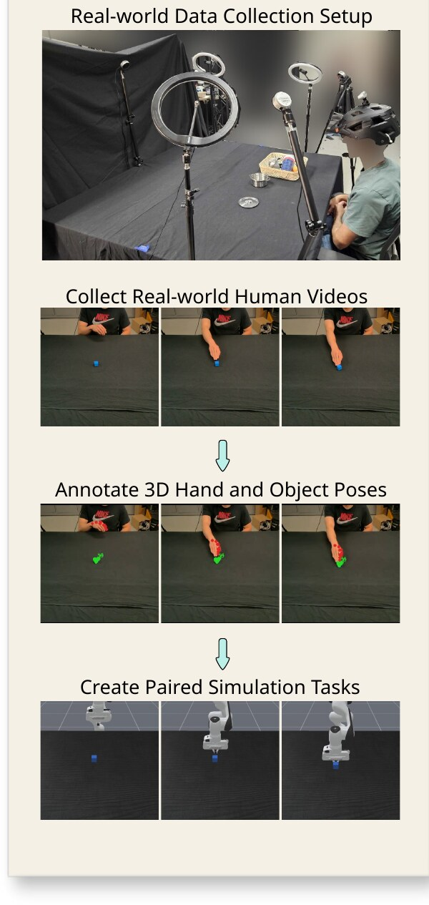
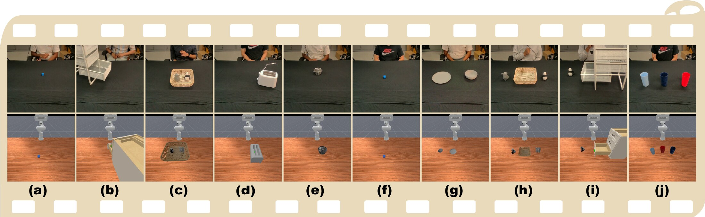
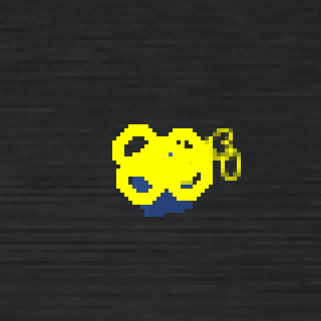
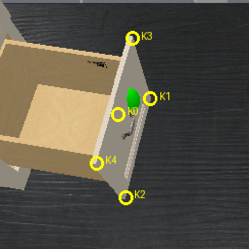
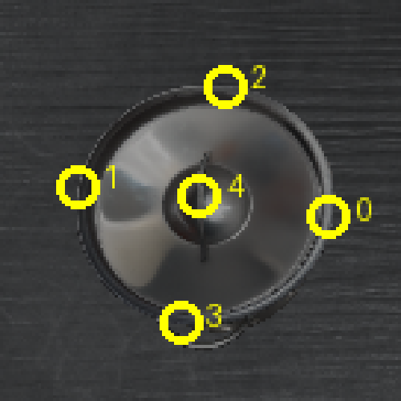
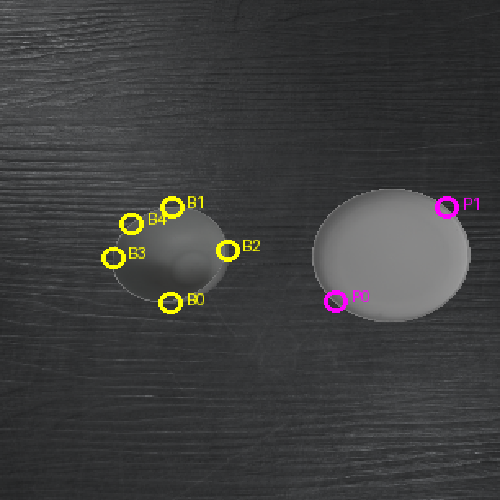
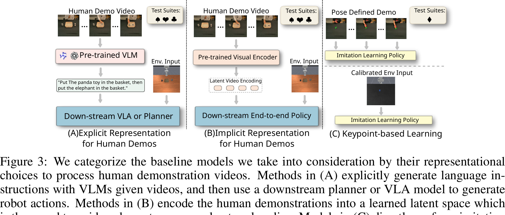

Conference on Robot Learning (CoRL) 2026
A benchmark for evaluating robot skill learning by observation — paired real‑world human videos and simulated robot trajectories across ten manipulation tasks.
1Arizona State University · 2NVIDIA
*Equal contribution
Learning from Observation (LfO) is a fundamental robotic capability that replicates how humans and animals socially learn from each other. Beyond its biological parallels, this modality offers a practical solution for data scaling in sample‑inefficient, data‑starved domains like robotics. Recent work has demonstrated promising results in learning manipulation skills from human videos, yet progress in this area remains difficult to assess: existing methods vary widely in assumptions, hardware choices, and environment setups, making meaningful comparisons — and identifying real advances — hard to come by.
To address this, we introduce RoboReel: a unified benchmark for evaluating models that learn policies from human videos. RoboReel bundles real‑world human demonstration videos, simulated robot trajectories, and evaluation environments across ten manipulation tasks, with four test suites that probe robustness to visual distractors and the ability to complete long‑horizon tasks. We evaluate learning‑from‑observation models from three different representational categories — over seven state‑of‑the‑art algorithms, including our own VLA‑based variants — and analyze where each family succeeds and fails. Our results show that long‑horizon tasks and tasks with low manipulation tolerances remain challenging for every current method.
RoboReel is the only benchmark that pairs multi‑view, distractor‑annotated real‑world human video with a matching evaluation environment.
| Dataset | Real‑world human vid. |
Human demo. w/ distractions |
Multi‑view demo. |
Paired real‑world human vid. eval env. |
Env. w/ distractions |
Multi‑view env. |
Articulated objects |
Long horizon |
|---|---|---|---|---|---|---|---|---|
| RoboCerebra | ✗ | ✗ | ✗ | ✗ | ✓ | ✓ | ✓ | ✓ |
| LIBERO | ✗ | ✗ | ✗ | ✗ | ✓ | ✓ | ✓ | ✓ |
| RoboCasa | ✗ | ✗ | ✗ | ✗ | ✓ | ✓ | ✓ | ✓ |
| VLABench | ✗ | ✗ | ✗ | ✗ | ✓ | ✓ | ✓ | ✓ |
| MimicGen | ✗ | ✗ | ✗ | ✗ | ✓ | ✓ | ✓ | ✓ |
| EgoVerse | ✓ | ✓ | ✗ | ✗ | ✗ | ✗ | ✓ | ✓ |
| Human2Robot | ✓ | ✓ | ✗ | ✗ | ✗ | ✗ | ✗ | ✓ |
| RH20T | ✓ | ✓ | ✓ | ✗ | ✗ | ✗ | ✓ | ✗ |
| MimicDroid | ✗ | ✓ | ✓ | ✗ | ✓ | ✓ | ✓ | ✗ |
| RoboReel (Ours) | ✓ | ✓ | ✓ | ✓ | ✓ | ✓ | ✓ | ✓ |
Six participants perform each task at a calibrated tabletop rig. Their videos are annotated with 3D hand and object poses, then mirrored into a digital‑twin simulation with matching objects, textures, and camera poses.

A calibrated tabletop rig: three fixed RealSense L515 cameras (front, left, right) plus a helmet‑mounted RealSense D435 for an egocentric view.
Six participants demonstrate each of the ten tasks under both clean and visually distracted conditions — 100 demos per task per condition.
Per‑frame hand and object keypoints are recovered in a shared, calibrated coordinate frame, powering the Pose‑Defined test suite.
A ManiSkill / SAPIEN digital twin reconstructs every object's mesh, texture, and the real camera geometry, so sim and real line up visually and metrically.
Three suites probe robustness to visual distractors under different train/eval regimes; the fourth is a calibrated suite for keypoint‑ and pose‑based methods.
Every task is filmed with a real human demonstrator (top row) and rebuilt as a matching digital twin (bottom row) so any LfO method can be evaluated on identical geometry, texture, and camera pose.

Every human demo also carries per‑frame hand and object keypoints in a shared, calibrated coordinate frame — the input to keypoint‑based LfO methods like PointPolicy.




We group every baseline by how it turns a human demonstration into something a robot policy can act on.

A pretrained VLM turns the human video into a language instruction, which a downstream VLA or planner executes.
A pretrained visual encoder maps the human video into a latent encoding that conditions an end‑to‑end policy.
An imitation‑learning policy trains directly on 3D hand‑pose keypoints and rolls out on an environment sharing the same action space.
Mean ± std success rate (%) over 3 seeds. Red bold marks the best result in the column; black bold marks the best result within a model family.
| Family | Model | Bowl in Plate | Close Drawer | Empty Basket | Open Lid | Pick Cube | Press Toaster | Push Cube | Stack Cups | Toys in Basket | Toy in Drawer |
|---|---|---|---|---|---|---|---|---|---|---|---|
| Explicit | SeeDo | 71.3±2.2 | N/A | 7.8±1.9 | 54.1±3.6 | N/A | N/A | N/A | 0.0±0.0 | 18.7±1.9 | N/A |
| VLM + π₀.₅ | 1.7±1.7 | 88.3±3.3 | 1.7±1.7 | 20.0±2.9 | 6.7±1.7 | 31.7±3.3 | 18.3±1.7 | 0.0±0.0 | 0.0±0.0 | 16.7±4.4 | |
| Implicit | π₀.₅ (Uniform) | 31.7±3.3 | 98.3±1.7 | 18.3±6.7 | 93.3±4.4 | 55.0±5.8 | 83.3±3.3 | 78.3±6.0 | 11.7±3.3 | 20.0±2.9 | 16.7±7.3 |
| π₀.₅ (Keyframes) | 46.7±6.0 | 100.0±0.0 | 20.0±2.9 | 73.3±1.7 | 23.3±7.3 | 88.3±6.7 | 100.0±0.0 | 8.3±3.3 | 21.7±3.3 | 20.0±7.6 | |
| Vid2Robot | 1.7±1.7 | 21.7±3.3 | 3.3±1.7 | 3.3±3.3 | 1.7±1.7 | 21.7±6.0 | 5.0±2.9 | 3.3±1.7 | 0.0±0.0 | 0.0±0.0 | |
| UniSkill | 0.0±0.0 | 66.7±8.8 | 0.0±0.0 | 8.3±1.7 | 10.0±2.9 | 25.0±10.0 | 0.0±0.0 | 0.0±0.0 | 0.0±0.0 | 0.0±0.0 |
| Family | Model | Bowl in Plate | Close Drawer | Empty Basket | Open Lid | Pick Cube | Press Toaster | Push Cube | Stack Cups | Toys in Basket | Toy in Drawer |
|---|---|---|---|---|---|---|---|---|---|---|---|
| Explicit | SeeDo | 66.3±0.4 | N/A | 4.9±2.0 | 37.8±3.1 | N/A | N/A | N/A | 0.0±0.0 | 11.1±2.3 | N/A |
| VLM + π₀.₅ | 30.0±7.6 | 63.3±4.4 | 13.3±1.7 | 18.3±4.4 | 5.0±5.0 | 13.3±1.7 | 15.0±5.0 | 0.0±0.0 | 1.7±1.7 | 5.0±2.9 | |
| Implicit | π₀.₅ (Uniform) | 86.7±4.4 | 86.7±3.3 | 25.0±2.9 | 73.3±10.1 | 13.3±6.0 | 45.0±7.6 | 71.7±8.3 | 5.0±0.0 | 5.0±2.9 | 23.3±3.3 |
| π₀.₅ (Keyframes) | 88.3±7.3 | 85.0±5.0 | 21.7±7.3 | 85.0±2.9 | 48.3±6.0 | 56.7±6.0 | 21.7±6.0 | 8.3±4.4 | 3.3±1.7 | 18.3±1.7 | |
| Vid2Robot | 6.7±4.4 | 10.0±5.8 | 3.3±3.3 | 0.0±0.0 | 0.0±0.0 | 30.0±5.0 | 8.3±3.3 | 0.0±0.0 | 0.0±0.0 | 0.0±0.0 | |
| UniSkill | 0.0±0.0 | 56.7±13.6 | 10.0±2.9 | 21.7±6.7 | 1.7±1.7 | 21.7±7.3 | 8.3±1.7 | 0.0±0.0 | 0.0±0.0 | 0.0±0.0 |
| Family | Model | Bowl in Plate | Close Drawer | Empty Basket | Open Lid | Pick Cube | Press Toaster | Push Cube | Stack Cups | Toys in Basket | Toy in Drawer |
|---|---|---|---|---|---|---|---|---|---|---|---|
| Explicit | SeeDo | 66.3±0.4 | N/A | 4.9±2.0 | 37.8±3.1 | N/A | N/A | N/A | 0.0±0.0 | 11.1±2.3 | N/A |
| VLM + π₀.₅ | 6.7±3.3 | 61.7±3.3 | 5.0±5.0 | 6.7±1.7 | 11.7±4.4 | 15.0±5.0 | 6.7±1.7 | 0.0±0.0 | 0.0±0.0 | 0.0±0.0 | |
| Implicit | π₀.₅ (Uniform) | 31.7±4.4 | 58.3±8.3 | 18.3±4.4 | 61.7±4.4 | 25.0±5.8 | 15.0±5.0 | 6.7±4.4 | 5.0±2.9 | 11.7±4.4 | 6.7±1.7 |
| π₀.₅ (Keyframes) | 25.0±5.0 | 70.0±2.9 | 21.7±4.4 | 63.3±4.4 | 30.0±5.0 | 26.7±4.4 | 31.7±3.3 | 11.7±4.4 | 18.3±3.3 | 6.7±1.7 | |
| Vid2Robot | 0.0±0.0 | 23.3±1.7 | 5.0±2.9 | 0.0±0.0 | 0.0±0.0 | 23.3±9.3 | 6.7±3.3 | 0.0±0.0 | 0.0±0.0 | 0.0±0.0 | |
| UniSkill | 0.0±0.0 | 63.3±14.8 | 0.0±0.0 | 18.3±1.7 | 1.7±1.7 | 28.3±8.8 | 0.0±0.0 | 0.0±0.0 | 0.0±0.0 | 0.0±0.0 |
N/A — SeeDo's action vocabulary is restricted to pick‑and‑place tasks.
PointPolicy tracks the demonstrator's trajectory well on tasks that tolerate a few centimeters of error — Push Cube and Close Drawer stay strong even under distraction. But success collapses on anything that needs a precise grasp (Open Lid, Pick Cube, Bowl in Plate): a ~2–3 cm precision floor in the rigid‑transform action recovery means the policy can navigate to the right sub‑region of the workspace but can't reliably close the last few centimeters onto a graspable surface.
@inproceedings{gu2026roboreel,
title = {Monkey See, Can Monkey Do? A Benchmark for Evaluating Robot Skill Learning by Observation},
author = {Gu, Weiwei and Gupta, Anmol and Sah, Anant and Varghese, Ryan and Vanam, Lalitha Shreya and Adireddi, Prabhath and Karkus, Peter and Gopalan, Nakul},
booktitle = {Conference on Robot Learning (CoRL)},
year = {2026}
}